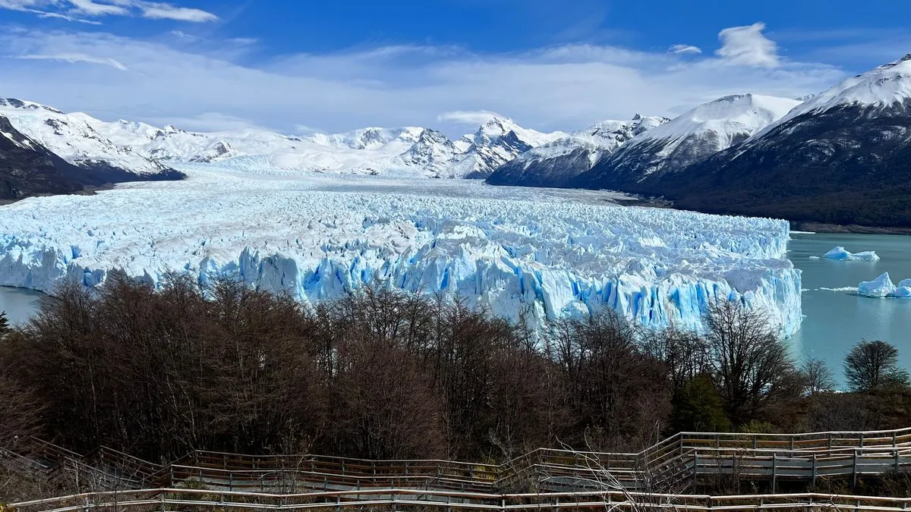
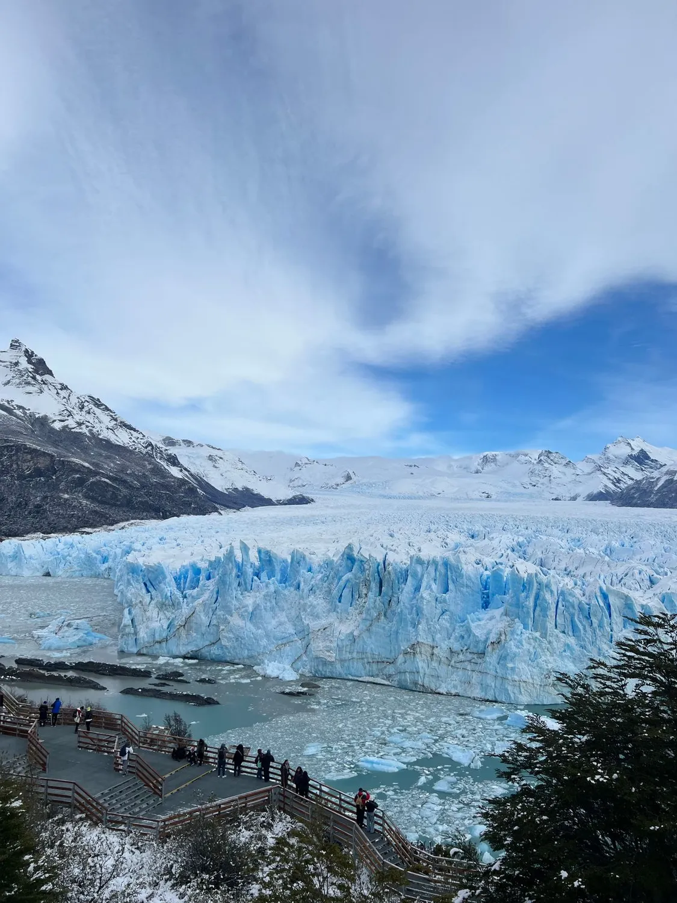
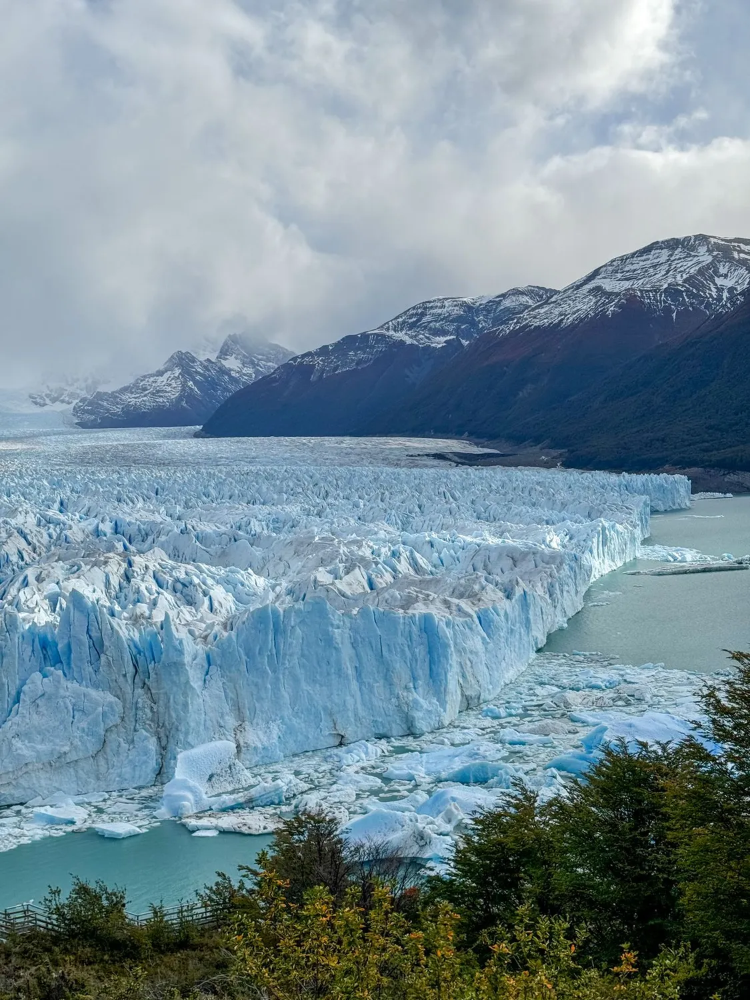

O fim do mundo onde glaciares imensos colidem com montanhas afiadas.
A vastidão indomável do extremo sul das Américas repele as amarras da civilização. Aqui, os ventos puros moldam torres de granito e o gelo azul cerúleo rompe o silêncio dos lagos patagônicos. A alta temporada vai de novembro a março, mas abril e outubro entregam a mesma paisagem com metade das pessoas, se você topar mais frio.
Nesta natureza bruta, abrimos acesso aos 'luxury lodges' e estâncias de elite. A glória é explorar a crueza selvagem durante o dia e descansar com taças de Malbec envelhecido aquecido por lareiras acesas à noite....
O icônico parque nacional chileno exige exploração sem cansaço logístico. Nossa curadoria seleciona lodges ecológicos que se mesclam às estepes, oferecendo cavalgadas com gaúchos locais, banheiras de hidromassagem debruçadas ao vento e visão desimpedida dos Cuernos del Paine.
Enquanto as passarelas se enchem de ônibus turísticos, levamos você em safáris náuticos VIP ou minitrekking sob os gigantes de gelo na Argentina. Encerramos a aventura brindando com whisky gelado diretamente por blocos milenares colhidos da própria geleira desabante.
Dominar o pampa argentino a cavalo ganha contorno aristocrático ao se hospedar nas lendárias estâncias rurais isoladas. Deguste cordeiro patagônico assado lentamente 'al asador' e sinta o acolhimento gaúcho revestido com tapeçarias e aconchego térmico supremo.
Navegar no confim do globo terrestre em embarcações de expedição intimistas revela colônias remotas de pinguins imperadores, baías forradas por líquens alaranjados floridos nas marginais de fiordes congelados. A maestria marítima unida à palestras glaciológicas ricas e vinho quente acolhed...
Um exemplo de como desenhamos a sua jornada, cada detalhe é personalizável.
Traslado executivo privativo do aeroporto ao lodge. Jantar de boas-vindas com vinhos da Patagônia e briefing da viagem.
Navegação VIP e minitrekking sobre o gelo milenar. Brinde com whisky resfriado por blocos colhidos da própria geleira.
Exploração das estepes em lodge ecológico, com vista desimpedida dos Cuernos del Paine e banheira de hidromassagem ao vento.
Hospedagem em estância histórica privada. Domínio do pampa a cavalo e gastronomia gaúcha autêntica ao redor do fogo.
Navegação de expedição por fiordes e colônias de pinguins. Traslado privativo de volta ao aeroporto.
Sem surpresas. Tudo claro antes de você embarcar.


